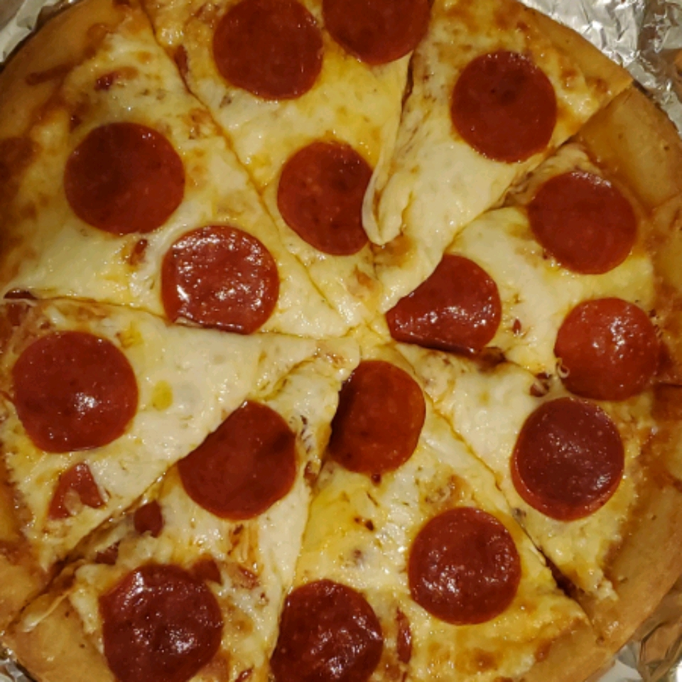

This is my recipe for homemade pepperoni pizza. This delicious pie will feed a family of 12 for a whole month.
This is an ancient recipe passed down through generations starting from 500bce
Combine all sauce ingredients with 1/2 cup water in a medium bowl; set asidefor flavors to develop while making the crust. Freeze remaining paste.
Combine 2 cups of flour with the dry yeast, sugar, and salt. Add the water and oil and mix until well blended (about 1 minute). Gradually add enough remaining flour slowly, until a soft, sticky dough ball is formed.
Divide dough in half. Pat each half (with floured hands) into a 12-inch greased pizza pan OR roll dough to fit pans.
Preheat oven to 425 degrees F. Top crusts with sauce, pepperoni and cheese.
Bake for 18 to 20 minutes until crusts are browned and cheese is bubbly. For best results, rotate pizza pans between top and bottom oven racks halfway through baking.